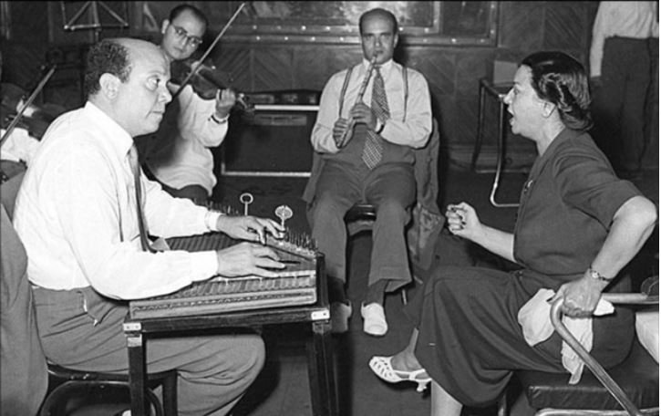

أم كلثوم في أحدى البروفات
كيف يمكن فهم أم كلثوم من خلال نظريّة الأداء؟
يغفل كثير من المحلّلين، سواءً الموسيقيين أو غيرهم، البعد الأدائي في تفسير عبقرية أو البعد الإبداعي في غناء أم كلثوم. فيركّز البعض على طبيعة الصوت1، أو الأسلوب الغنائي2، أو السياق السياسي والاجتماعي (علاقتها بمن في السلطة، أسلوب حياتها البسيط والذي ارتبط بتأكيدها على أصولها كفلّاحة بسيطة من بيئة محافظة)، أو السياق الفنّي (علاقتها بأهم شعراء عصرها والموسيقيين المهمين في تلك الفترة). لكن يبقى فهم تجربة أم كلثوم منقوصًا دون النّظر إلى طبيعة وعناصر الأداء كمدخل، ليس فقط للتحليل، إنّما لإثراء النقاشات والبحث المستمر حول مقدرتها الفنيّة.
إضافة إلى أنّها نتاج لتاريخ طويل من النقد المسرحي الذي يعود تاريخه للقرن الثامن عشر، والذي يتجّسد في شخص غوتهولد لاسينغ الذي صاغ لفظ دراماتورجيا ليشير إلى ما كل ما له علاقة بالعمليّة الفنيّة لفكرة العرض والأداء (عناصر العرض، طريقة العرض، المشاهدين، فكرة و تركيبة العرض). وباستخدام دراسات علم الإنسان وعلم الاجتماع في مزيج "غير شرعي" مع دراسات النقد المسرحي الألماني (دراماتورجيا)، تظهر لنا نظرية الأداء بشكلها المعاصر، والتي إن لم تكن تمثّل نظريّة مكتملة لحقل معرفة معيّن، فهي تمثّل مجالًا مفتوحًا من التفكير في ظاهرة الأداء بصورها المختلفة.
أهم ما يميّز نظريّة الأداء في تحليل وتدبّر الظاهرة الأدائيّة هو التركيز على عناصرها بشكل غير تقني3، فيفتح بذلك المجال لأفكار أو ملاحظات مختلفة من الممكن أن تسقط من منظور واحد فقط يتم استخدامه. بما يخص أم كلثوم، أكثر ما كتب عنها يقع تحت منظور موسيقي أو منظور أنثروبولجي أو اجتماعي، دون التفكير في عناصر الأداء نفسها، وكيف شكّلت تجربتها الأدائيّة نفسها وللمتلقين لفنّها في سياق زمني ومكاني محددين.
ما أفترضه في هذا المقال هو أن أم كلثوم قامت باستعارة عناصر أداء نوع من الغناء، وأسقطتها على نوع آخر بطريقة فيها شيء من الابتكار والتجديد. ما سمح لها باستخدام قدراتها بشكل مثالي، وفتحت لنفسها مجالًا جديدًا للتجريب والإبداع، في شكل مشابه، ويكاد أن يكون مقارنًا بتجربة ويتني هيوستون مع الإنشاد الديني في شكله الأفريقي–الأميركي ودمجها ومزجها مع موسيقى البوب والآر آند بي.
أم كلثوم ونقطة التحول
يعرف الجميع أن أم كلثوم بدأت حياتها كمنشدة (وفي بعض الروايات مرتّلة للقرآن) وأتقنت فن الإنشاد الديني من ابتهالات ومديح وتواشيح منذ سن صغيرة، وأمضت زمنًا تمارسه بشكل شبه يوميّ. إلى جانب منحها قدرة متقنة في فهم والتمكّن من صوتيّات اللغة (مخارج الألفاظ، السواكن والفواتح والمرقّقات والمفخّمات كما كان يقول عمار الشريعي)، طُبعت عليها عناصر أداء فن المديح والإنشاد بشكل يكاد أن يكون فطريًّا. وإذا ألقينا نظرة على مثال من تلك الليالي حين كانت أم كلثوم تنشد في شادر أو في بيوت أحد أعيان قريتها أو القرى المجاورة لها، نرى الآتي:
- سياق حميمي جدًا للمؤدّي والجمهور، فحتّى في وجود شادر، كثيرًا ما يقف الجمهور في شبه دائرة حول المؤديّة أو على مسافة لا تزيد عن متر أو مترين.
- تفاعل الجمهور آني وعفويّ وغير مرتبط بقواعد استماع معيّنة، بحيث تصبح ردّة الفعل ونتيجة الغناء متزامنتان مع ما تقوم به أو ما تقدّمه ويشكّل نوع الأداء، فيصبح الجمهور هو المؤلف الثاني، وتصبح التجربة الفنيّة تجربة شراكة بالأساس وليست تجربة مُلقي ومتلقّي.
- مرونة في الدمج والتركيب: رغم وجود تواشيح أو مدائح معروفة لها بداية ونهاية، إلّا أنّه في الكثير من الأحيان يتم دمج تواشيح مع بعضها البعض حسب حالة المغنّي الأدائيّة وحالة الجمهور. فعلى سبيل المثال تدمج أغنيتان لارتباط موضعهما، أو لحنهما أو حالتهما الأدائيّة. وتلك المرونة أدّت إلى التركيز، ليس فقط على أغنيّة بعينها، ولكن بالأساس على التجربة الفنيّة ككل لكل من المؤديّة والمستمعين.
- تجاوز البعد الشخصي: موضوع الأداء في حد ذاته (مدح الأنبياء، الدعاء، استعطاف الخالق) يفرض على المؤدّي تجاوز البعد الشخصي: فالمغنَى عنه هو الله أو خاصته، ويدفع بالتجربة الاستماعيّة لحالة من الوجد بشكل يوازي موضوع الأغنيّة، للتحوّل التجربة الفنيّة برمّتها إلى حالة صوفيّة تتجاوز الواقع الدنيوي. ويصبح نجاح المؤديّة مرتبط تمامًا بقدرتها على تجريد مشاعر مثل: الحب والهجر والحزن، وإسقاطها في مجال روحاني متجاوز.
- الارتجال والإعادة: وهاتان صفتان تعرّفان الموسيقى والأداء العربي. الارتجال بالأساس منظور للتجربة الفنيّة يفترض أن يفتح المجال لمقدرة المؤدّي لاتّخاذ خيارات بشكل يتضمن بعض المخاطر والترقّب. والإعادة، كما يقول ثيودور أدورنو، تمثّل نوعًا من التنويم المغناطيسي، لإجبارها المستمع على تعقّب ما يتم طرحه على أمل اكتشاف اختلاف جديد، والاستزادة. ولا يمكن تصوّر غناء التواشيح أو الإنشاد دون الارتجال والإعادة بشكل شبه حتميّ، ويعتبر جزءًا لا يتجزّأ من ذلك النوع من الأداء والغناء.
- زمنيّة الأداء: وهي من أهم معالم تلك التجربة. إذ كانت أم كلثوم تغنّي لمدة قد تصل إلى سبع أو ثمان ساعات متواصلة، معتمدة على التوافق العاطفي والإنساني مع المادة المغنّاة والجمهور. وهو الملمح الذي لازمها في أغلب حياتها الفنيّة بعد ذلك، إن لم يكن الملمح الأساسي لأسلوبها الأدائي. فالمعروف في نظرية الأداء أن الأداء الزمني المجاوز لمدة معروفة مسبقًا والذي يستمر لفترات طويلة، إنّما هو طريقة أخرى لاكتشاف جميع الاحتمالات الفنيّة الكامنة في أي مادة فنيّة. وبالتالي، لا يمكن الوصول إلى حقائق ومعرفة فنيّة معيّنة إلّا عن طريق فتح المجال الزمني بشكل غير محدّد مسبقًا.
تكلّم كثيرون عن ذلك مثل مارينا أبراموفيتش، وخاصة عملها ذ أرتيست إز بريزنت على سبيل المثال، والتي دائمًا ما ربطت عروضها الأدائيّة بمدد زمنيّة طويلة قد تتجاوز الأسابيع والشهور، مفسّرة ذلك بأهميّة خلق إطار زمني جديد للتجربة الأدائيّة ذاتها ليسمح بإنتاج أفكار وخبرات جديدة من المستحيل فهمها أو استيعابها في إطار زمني صغير أو تقليدي للأداء.
تميّزت طريقة الغناء آنذاك بتأثرها الشديد بطريقة الغناء والموسيقى العثمانيّتان على حساب خصوصية الموسيقى العربيّة واللغة العربيّة نفسها (وجود عدد أكبر من حروف العلة باللغة التركيّة يسمح بالمط والتطويل، إضافة إلى غياب الكثير من السواكن). رغم محاولتها في تطوير أسلوبها الخاص في الغناء، إلا أن أعمال أم كلثوم في تلك الفترة تأثّرت بهذا المناخ الفني.
استمرّت أم كلثوم بإنتاج أعمال فنية تلتزم بتلك القواعد غير المكتوبة حتى وصلت لدرجة من الشهرة والنضج الفني، لتتحول ببطء نحو الشكل المتعارف عليه من الغناء والأداء. فمع بدايات الأربعينيّات، بدأت أم كلثوم في استعارة عناصر أداء الإنشاد الديني ومزجها مع عناصر الغناء الدنيوي لخلق تجربة جديدة في الأداء. يظهر ذلك بشكل جلي في أغنية مثل أنا في انتظارك (١٩٤٣) من كلمات بيرم التونسي وألحان زكريا أحمد. الأغنية مدّتها في شكلها القصير حوالي ٢٥ دقيقة، ورغم تناولها موضوعًا اعتياديًّا (انتظار الحبيب الغائب)، نجد أن أم كلثوم تنقل تلك الفكرة الخاصة الفرديّة المتصلة بمواضيع الهجر واللوعة وتسقطها في مستوى الظاهرة المتجاوزة تمامًا، مثلما كانت تفعل عندما كانت تنشد.
فتبتعد مواضيع الأغنية عن الارتباط بشخص أم كلثوم أو حالتها الشخصيّة، بل بالتجربة الإنسانيّة ذاتها في تجريدها. بما أن خلق تلك المسافة بين المغنّي أو المنشد وبين الموضوع المغنّى عنه هي استراتيجيّة مرتبطة بالإنشاد الديني بالأساس. فرغم صدق إحساس أم كلثوم وحضوره، إلّا أنّها لا تسقطه على نفسها، فلا تصبح التجربة عن أم كلثوم ولكن عن الموضوع في المطلق.
في نفس العقد نجد أغنية يللي كان يشجيك أنيني4 (1949) من كلمات أحمد رامي وألحان رياض السنباطي، التي تعتبر المثال الأوضح على تشكيل قالب الأغنية السنباطيّة، وأكثر ألحانه صوفيّة على الإطلاق. تتحرّك أم كلثوم في هذه الأغنيّة بثقة أكبر لاستدعاء هذا التراكم المختزن في ذاكراتها الأدائيّة لصياغة الشكل النهائي لجميع أغانيها في المستقبل: أغنية واحدة تزيد مدّتها عن الساعة. وفي ذلك تجلٍّ واضح لمفهوم الأداء الزمني الذي يتجاوز مدة محددة، مستخدمةً فيها جميع أساليب الإنشاد الدينيّة (الإطالة، الإعادة، الارتجال بشكل موسع).
ما يميّزها كمؤديّة هي أنّها استطاعت استخلاص تلك العناصر من تجربة معيّنة، وتجريدها تقريبًا في شكل تقني، وإعادة تقديمها في إطار يكاد أن يكون نقيضًا لتلك التجربة ومعناها. فلا يؤدّي الغناء الدنيوي إلى حالة صوفيّة بالضرورة، ولا يعتمد مقياس نجاحه على خلق مثل تلك التجربة. ربط أم كلثوم نجاح أعمالها البعيدة كل البعد – موضوعًا على الأقل– عن الإنشاد الديني بخلق مثل تلك التجربة وتجاوب الجمهور مع الفكرة إنما هو دليل على موهبتها كمؤديّة.
لم يكن أحد في عشرينيّات القرن الماضي يتخيّل أن تقوم مغنيّة بغناء أغنية واحدة على المسرح لمدة تزيد عن الساعة، تقوم فيها بأداء أغنية عن ظلم الحبيب كأنها أغنيّة عن الوجد الصوفي، مستخدمة ملامح و أساليب الإنشاد الديني كإطار تقني وأدائي وتنجح دون أن يكون هناك التباس أو تشويش لجماليّات كلا التجربتين.
في حين أن إصرار أم كلثوم على العمل مع السنباطي منذ بداية الأربعينيّات، وبشكل حصري خلال الخمسينيّات هو أكبر مثال على تحويل تلك التجربة بشكل ممنهج من تجربة الإنشاد الديني إلى الغناء الدنيوي. لأن السنباطي انتهج نفس التجربة في التلحين والتأليف الموسيقي: وهي تقليب طريقة تلحين التواشيح والإنشاد الصوفي في قوالب موسيقيّة جديدة تندرج تحت تأليف موسيقي دنيوي لا يتبع نفس معايير أو علامات الموسيقى الدينيّة، متّخذًا موضوعاته من موضوعات حياتيّة عاديّة بالأساس.
بالتالي، تصبح دراماتورجيّة (التكوين والشكل العام للمحتوى الأدائي) الإنشاد الديني والمديح عنصر تلقائي لدى أم كلثوم. وتصبح هي أقرب ما تكون لمقدراتها عندما يقترب أداءها من تلك الدراماتورجيّة، وعندما تعيد صياغتها في قوالب جديدة، تسمح باستخدام تلك المكوّنات والتقنيات، وتصبح مجرّد مغنيّة عندما تُحرم من الفرصة أو المساحة للمزج أو دمج تلك التجربة (كل أغاني بليغ حمدي أو عبد الوهّاب أو أي أغنية رقصت عليها سهير زكي كما كان يقول لي أحد الأصدقاء) مع أشكال و قوالب أخرى.
لم تخترع أم كلثوم للعالم العربي مفهوم السلطنة مطلقًا، لكنّها أعادت صياغة المفهوم وطرق استقباله من قبل الجمهور وطرق قياس مدى نجاح أي مؤدي للوصول إلى السلطنة، حتى تم تفريد نوع مخصوص من السلطنة باسمها لأنها لا تندرج، لا من ناحية الأداء أو من الناحية الموسيقيّة، تحت طرق و أساليب السلطنة المعتادة قبلها أو في عصرها.
ما علاقة ويتني؟
لا يختلف اثنان على عبقريّة صوت ويتني هيوستون. فمثلها مثل أم كلثوم، لن أتناول تجربة ويتني من الناحية الموسيقيّة أو التقنية، فالكثيرين تناولوا إعجاز صوتها وكثيرين ما يزالون. ما يثير اهتمامي ويدفعني للربط بين تجربتها وتجربة أم كلثوم هو عنصر الأداء وتراكم الخبرات الأدائيّة، وتعميم ويتني لنفس التجربة ومزجها بالغناء الدنيوي.
نشأت ويتني في أسرة متوسّطة الحال، وكانت أمها تغني الجوسبل (الغناء الإنجيلي كما تعرّبه ويكيبيديا) إضافة إلى الغناء الدنيوي. كبرت ويتني وهي تغنّي في جوقة الكنيسة المعمدانيّة التي تشتهر بإنشادها الديني كتعبير عن الإيمان، وعرفت طيلة فترة نشأتها كمغنية جوسبل، بل وأشهر من أثروا فيها هي أريثا فرانكلين، إحدى أشهر مغنيات الجوسبل.
إذا رصدنا تجربة الإنشاد لويتني لوجدنا من أهم معالمها الآتي:
- جو حميمي للغناء، فيغني الجميع مع بعضهم البعض: المغنية، جمهور الكنيسة والجوقة. توجّه المغنية الكلام للجمهور مباشرة، ومن الشائع جدًا أن تتوقف عن الغناء وتتحدث مع الحضور.
- الارتجال والإعادة. فرغم وجود لحن محدد بنوتة موسيقيّة، إلا أنّه في أغلب الحالات تقوم المغنية بالارتجال اعتمادًا على المناسبة، وحالة الجمهور والحالة الأدائيّة، وتقوم بالإعادة بناءً على ذلك التفاعل، وهي عادة غير مألوفة في الغناء الغربي عامة.
- استخدام الحليات الصوتيّة بشكل كبير جدًا، والاعتماد على الغناء من دون موسيقى كوسيلة لتأكيد وتوثيق المعنى.
- دمج الأغاني وعدم وجود فواصل، وذلك لعدم كسر حالة التواصل التي تتطلب درجة من الاستمراريّة والتراكم قد تختل بوجود فواصل أو وقفات، ما يعني أن الغناء قد يتصل ببعضه البعض لمدة تزيد عن ١٥ دقيقة، أو في بعض الأحيان ٢٠ دقيقة وهذا أيضا ملمح غير مألوف للموسيقى الدنيويّة.
- قياس مدى نجاح المؤدية في الغناء إذا نجحت في جعل جمهور الكنيسة في شعور الحضور. والحضور هنا هو الحضور الإلهي أو الروح القدس. وفي كثير من الأحيان، تسأل المغنية جمهور الكنيسة: "هل يمكنك الشعور بحضور الروح؟" في محاولة لربط الغناء أو الأداء بحالة متجاوزة تتشابه مع حالة الوجد و السلطنة التي ارتبطت بأم كلثوم.
رغم اختلاف كل من أعمال ويتني وأم كلثوم من حيث المحتوى، ونوع الموسيقى، وأسلوب الغناء، وطبيعة الصوت وغيرها، إلا أن نجاح ويتني يرجع أساسًا لاستخدامها عناصر أداء الجوسبل لغناء أغاني البوب وأغاني البالادز التي اشتهرت بها. هذا ما دفع الكثير من النقاد إلى القول بأن حفلاتها الغنائيّة فاقت جميع ما سجلته في الاستوديو، وهي نفس الملاحظة التي قالها كثيرون عن أم كلثوم كذلك.
كانت تسعى ويتني للارتفاع بالجمهور إلى الشعور بالـ حضور، إنّما حضور حالة معيّنة من التأثر الوجداني التي ترتبط ارتباطًا لصيقًا بأداء الإنشاد الديني.
مثل أم كلثوم، رغم تركيز ويتني على الغناء الدنيوي بالأساس، إلا أنّها كلما ابتعدت عن أنواع الأداء التي تسمح لها باستخدام تلك العناصر والتقنيات، كلما فقدت قدرتها على التأثير بالشكل الذي اشتهرت به. فهي، على سبيل المثال، لم تنجح في غناء أنواع عديدة من موسيقى الأفرو–أميركيّة (مثل الهيب الهوب أو الراب مثلًا)، على عكس معاصرتها لورين هيل مثلًا، والتي غنت جميع أنواع الموسيقى الأفرو–أميركيّة، بما فيها الجوسبل بنفس القدر من النجاح.
في النهاية، فهم عناصر الأداء وتركيبة الإنشاد الديني وإعادة صياغتها بشكل خلّاق في قوالب موسيقيّة جديدة لكل من أم كلثوم وويتني هيوستون، وسعي كلا منهما لخلق نفس التأثير في الموسيقى الدنيويّة ومحاولتهما لإعادة تعريف مفهموم مثل السلطنة أو الحضور في إطار الموسيقى الدنيويّة، لا يرتبط فقط بمقدرتهنّ الموسيقيّة، والتي لا يختلف عليها أحد، بل ببراعتهما كمؤدّيتان أعادتا صياغة دراموتورجيا خاصة جدًا بتجربة روحيّة متجاوزة، وإسقاطها على تجربة دنيويّة لا ترتبط بالضرورة بمثل تلك الدراماتورجيا، وخلال تلك العمليّة الخلاقة قدمتا قوالب موسيقية جديدة فتحت المجال لفنٍّ ما يزال حيًّا.
الهوامش
(1) التركيز على طبيعة الصوت وخصائصه التقنية
(2) التحليل الموسيقي للأسلوب الغنائي
(3) التركيز على العناصر الأدائية بشكل غير تقني يفتح المجال لملاحظات مختلفة
(4) أغنية "يللي كان يشجيك أنيني" تعتبر من أكثر الأعمال صوفية في تاريخ أم كلثوم